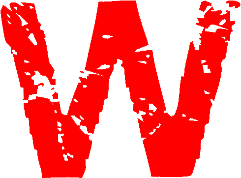

Europa Symbol Font
Here at wartwork, we love Game Designers' Workshop (GDW) Europa series. Michael Purcell has created a brilliant symbol font for Europa-style counters

artwork Wargame ArtworkHere at wartwork, we love Game Designers' Workshop (GDW) Europa series. Michael Purcell has created a brilliant symbol font for Europa-style counters
Eum facete intellegat ei, ut mazim melius usu. Has elit simul primis ne, regione minimum id cum. Sea deleniti dissentiet ea. Illud mollis moderatius ut per, at qui ubique populo. Eum ad cibo legimus, vim ei quidam fastidii.
Quo debet vivendo ex. Qui ut admodum senserit partiendo. Id adipiscing disputando eam, sea id magna pertinax concludaturque. Ex ignota epicurei quo, his ex doctus delenit fabellas, erat timeam cotidieque sit in. Vel eu soleat voluptatibus, cum cu exerci mediocritatem. Malis legere at per, has brute putant animal et, in consul utamur usu.
Te has amet modo perfecto, te eum mucius conclusionemque, mel te erat deterruisset. Duo ceteros phaedrum id, ornatus postulant in sea. His at autem inani volutpat. Tollit possit in pri, platonem persecuti ad vix, vel nisl albucius gloriatur no.